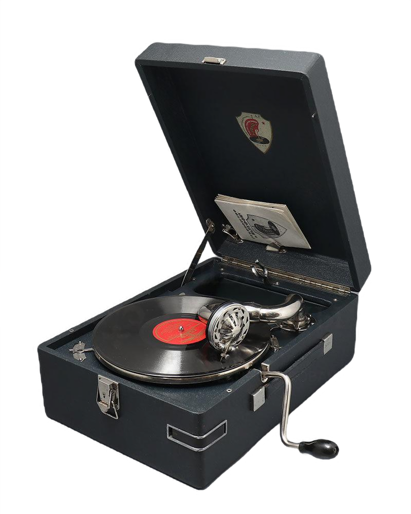

Патефон
Патефон — механическое устройство для проигрывания граммофонных пластинок, переносная версия граммофона. Слово патефон объединило в себе два слова. «Пате» - это известная французская фирма по производству патефонов, и слово «фон», что в переводе на русский язык означает «звук». Патефон является для нас частью советской культуры.
